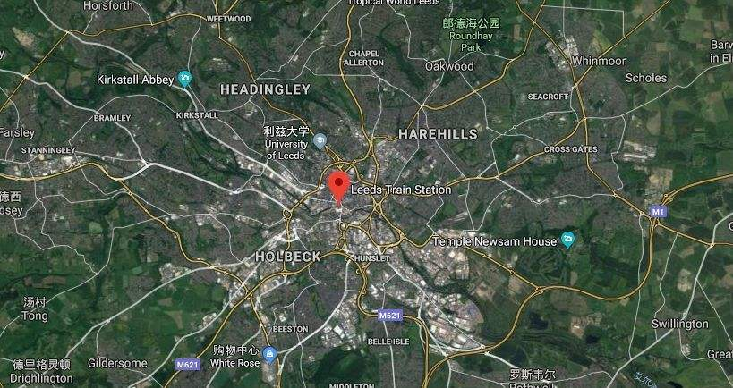

Location of Leeds
“Located at the eastern foot of the penning mountains, on the Bank of the Al River, it was originally an Anglo Saxon town on the North Bank of the Ayr River, and later developed into a local market trade center.”
Transportation
West Yorkshire has a complete transport network and other infrastructure, of which the first and most important highway in the UK, highway 1, has been built to connect Leeds with London and form a "t" network with highway 62, which connects the East and West ports of Hal and Liverpool. Road 62 runs through the central part of the UK, while Leeds is located at the junction of this "t" road network. It is the trade center of UK GDP second only to the southeast. One of the economic pillars of the Yorkshire hengbused area is the busiest port in the UK at present. The port serves the emerging European integration market and makes the region an important trade center in Europe.
Road pictures
Click this button to get your coordinates:
Developed transportation facilities
The transportation network plays an important role in the development of Leeds. The advanced traffic management system ensures the smooth traffic in the downtown area and makes the urban environment cleaner and safer.
Specific information
(1)Leeds Bradford International Airport, referred to as Leeds airport, is located in Yeadon, Leeds Metropolitan Area, West Yorkshire, England, 11 kilometers northwest of Leeds city center. It serves Leeds and Bradford, as well as the entire Yorkshire area, including the cities of York and Wakefield, and is the largest airport in Yorkshire.
(2)The British high-speed rail project, called "British high-speed rail 2", is planned to be built in two phases. The first phase connects London with Birmingham, the second largest city in the UK. Construction started in 2016 and completed in 2026. The second phase consists of two lines, connecting Manchester and Leeds from Bermingham to the north.